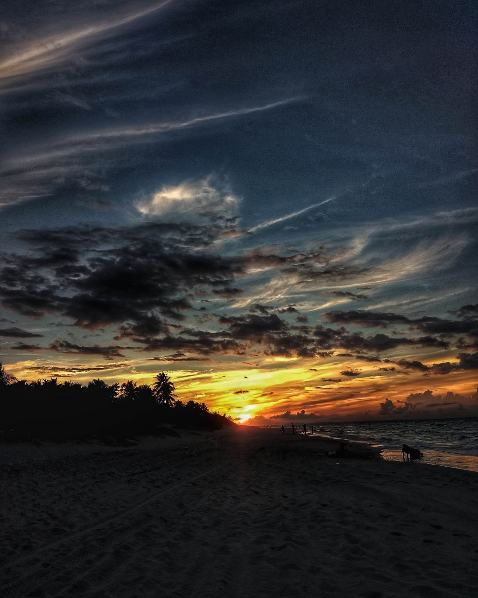

La Habana

La Habana, capital de Cuba, es una ciudad llena de paradojas y contradicciones, cuyos principales atractivos son la belleza de su casco histórico, su excepcional arquitectura, la iconografía revolucionaria y cubana (desde El Malecón hasta la Plaza de la Revolución, pasando por La Giraldilla) y su amplia oferta cultural. Para conocer La Habana mínimamente se necesita disponer de al menos tres días; aunque lo recomendable es visitarla durante una semana. Las zonas donde se concentran la mayor parte de los lugares de interés son: La Habana Vieja, el Parque Histórico Militar de Morro Cabaña, Centro Habana y Vedado.
Varadero
Varadero, ubicada a 36 km de la ciudad de Matanzas, en la península de Hicacos, es el punto cubano más cercano a los Estados Unidos. Con una extensión de 30 km de los que 22 son playas, Varadero está considerado, por su perenne luz tropical, su exótica y exuberante vegetación y la tibieza de sus aguas, uno de los principales reclamos turísticos para los viajeros europeos. La playa de Varadero, o Playa Azul, hermosísimo enclave de arena rosa y dorada y agua brillante, se baraja entre los nombres de las playas más impactantes del mundo. Sin asomo de duda, es la más bella de todo el archipiélago cubano.
Viñales

La pintoresca ciudad de Viñales, ubicada dentro del Parque Nacional de Viñales, es para muchos uno de los lugares más fascinantes de toda Cuba. La localidad cuenta con testigos arquitectónicos de la época colonial que sumados a los valores ambientales hacen de Viñales un lugar de gran belleza, por lo cual no es de extrañar que haya sido declarado Monumento Nacional desde 1979. Aquí el ambiente es muy acogedor y tranquilo, lo que resulta idílico para disfrutar de unos días de relajación y reflexión en contacto con la naturaleza, con muchas opciones para realizar actividades al aire libre, tales como escalada, paseos a caballo, etc. Algunos de los lugares más interesantes a visitar en Viñales son: el Museo Municipal, el Jardín de la Caridad y la Plantación de Tabaco Casa del Veguero.